At the beginning of 2020, Kyash plans to release a next-gen of card, Kyash Card. A debit style card with a more secure support and user-friendly product. It will help us reach the company goal at the beginning of 2020, so we have to make a big impact and let the user get interesting and then apply for this card.
USER GOAL
Easy to compare the differences of the card, smooth flow to apply for a new card.
BUSINESS GOAL
Introduce and guide users to choose the new card to help the company to reach its goal.
When we just start this project, we already finished the real card design, so we need to put this beautiful card into our application and show it to the users to helps them get interesting.
It always will get panic when starting a totally new feature on the product, but I still try to follow the design thinking framework into this project, so project manager an I ask some agency to help us to do user interview with our target to ask about what they think of debit card and their daily use case. At meantime I'm doing some research on the world-wild competitor of what they design for this kind of case.
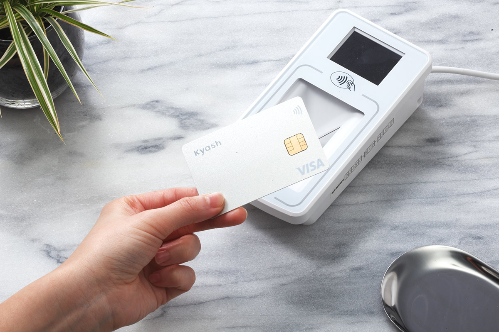
After we got the data and information, we actually can see the points that user cares and how they make decisions when they choosing those kinds of card products. So I base on that information to start to make function-flow and wireframes to helps the team to understand the structure of this feature.
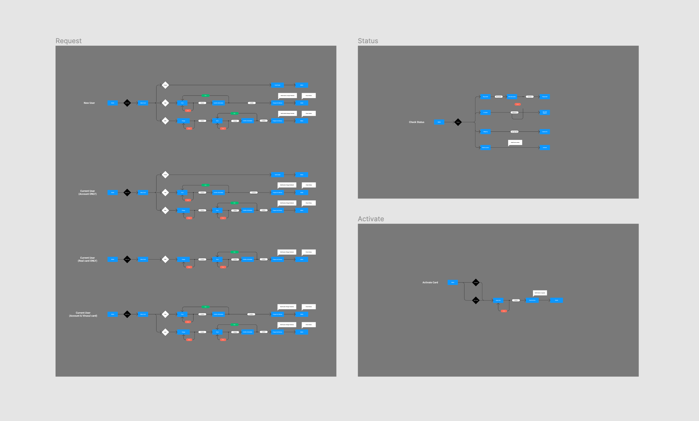
We also made some workshops to do the usability test with the Ops team. Meetings with the Ops team to go through the whole process to helps us to understand there has nothing we left or misunderstand, Ops team always gives us some important user need and their point of view to helps us understand more about the users.
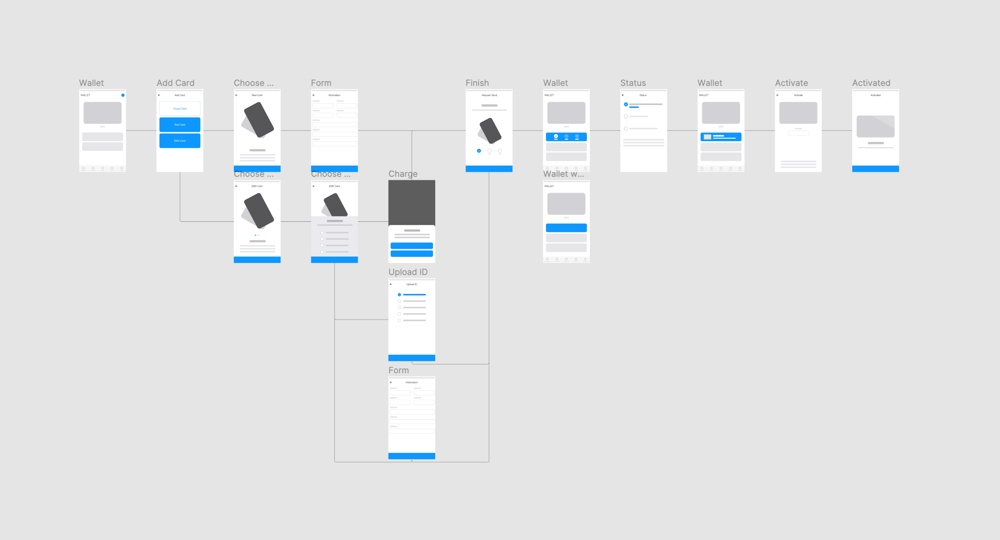
After that, I start to jump into the mockup design. Each key screen I made at least 3 different styles to helps the project manager and the developer team to make a better decision, some are base on the design tones, some are base on the development speed, some are base on user-friendly.
And I base on our decision start to make high-fidelity prototype to do the 2nd user testing in the company.
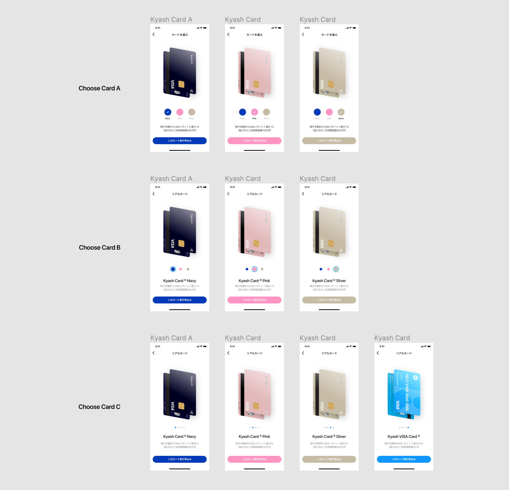
After the several rounds of the testing, we realize there have some testers couldn't do the good compare with the cards, also the information isn't enough for them to make the decision, so I focus on that to do the several improvements and other tests for few times, try to see if it helps. The project doesn't always have unlimited time, so in the end, we got one that we think could work for the first release, but still has space can improve in the future.
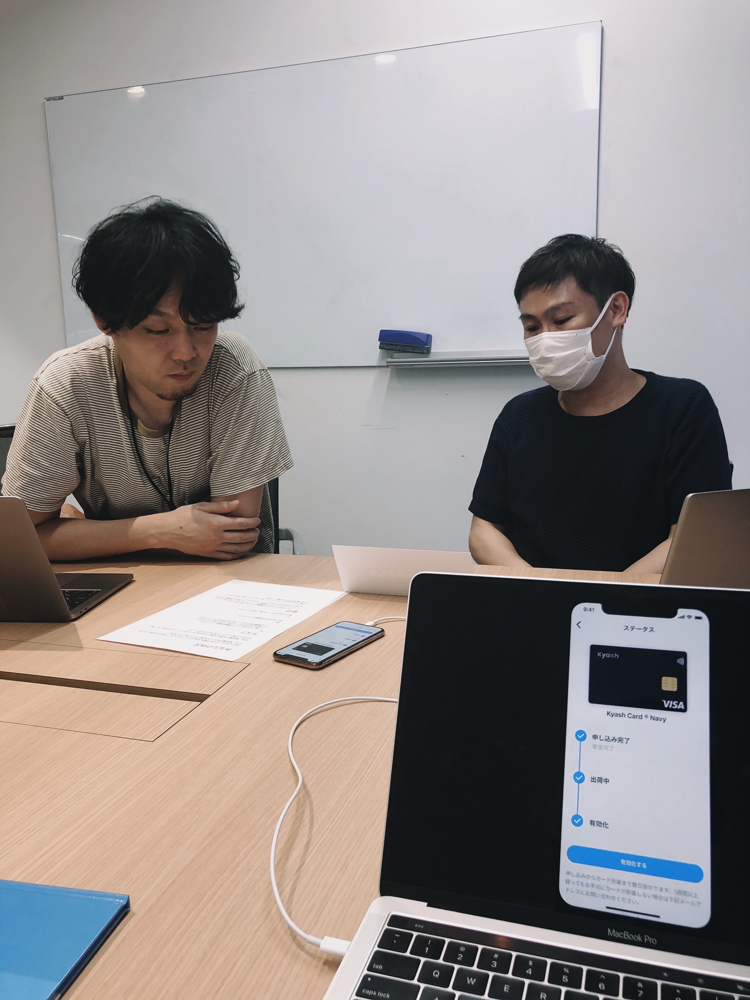
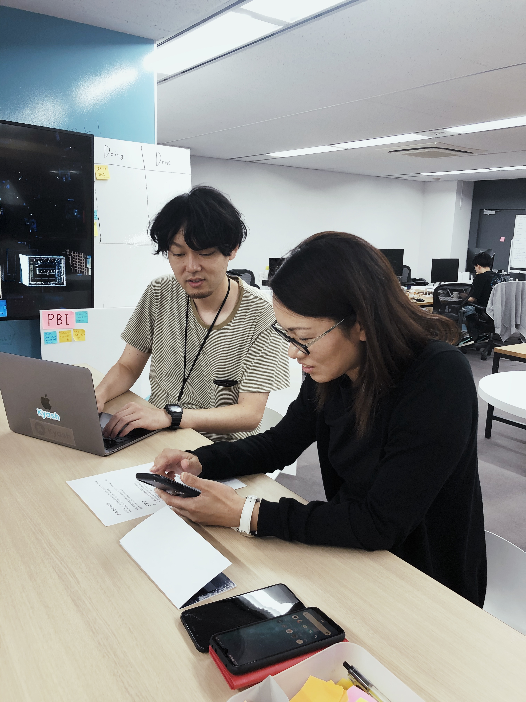
Kyash Card finally releases on 2/25, 2020.
We launched the special website for the Kyash Card and got the almost 30,000 apply in the first month since we launch, and the sign up users grew by 24.2%.
The result is still lower than our goal and needs to be improved in the next version. But we also got much positive feedback on the social network, really appreciate it.
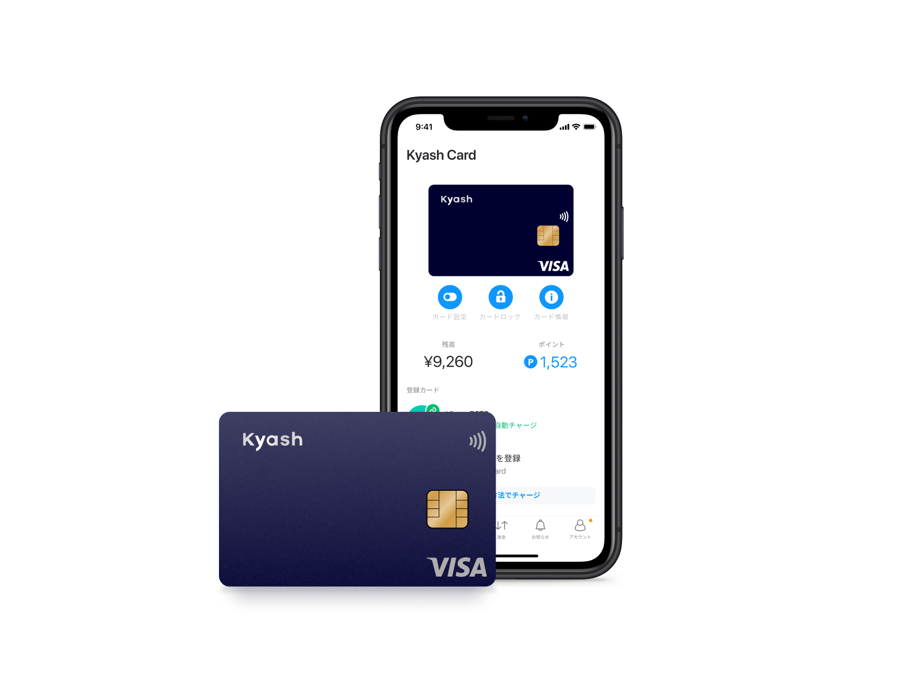
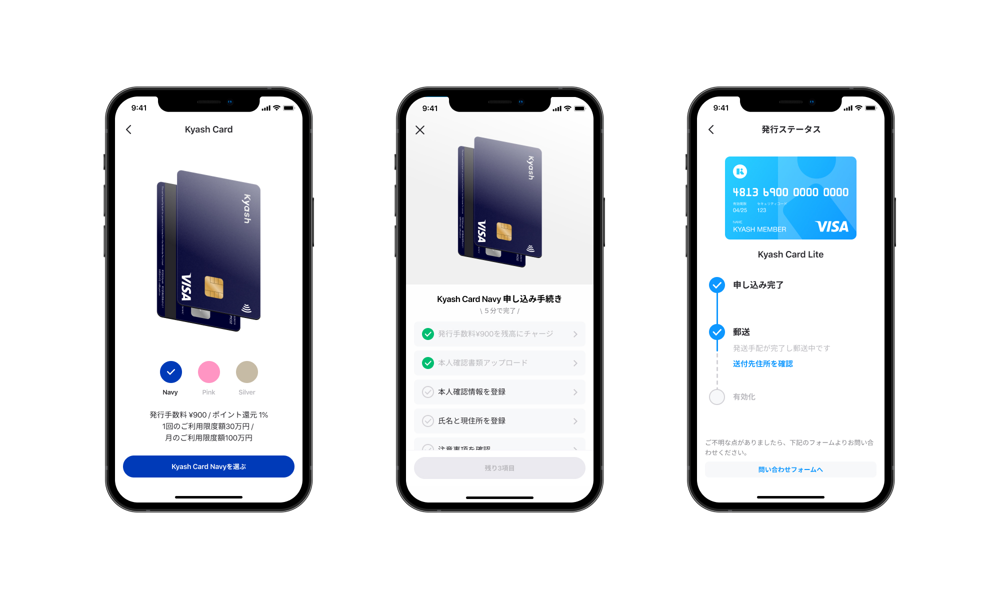
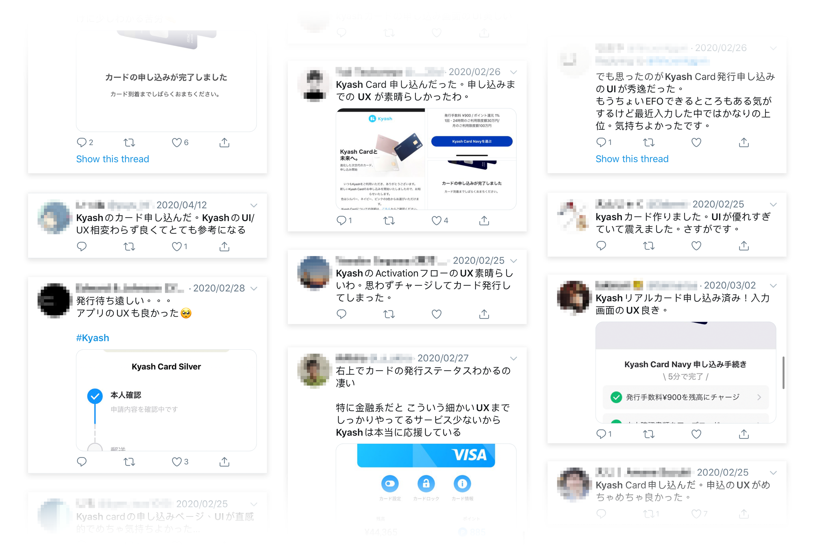
For the first big project that I was joined, I think it's a really good opportunity to understand how to make a balance between business and user goals, also make better decisions with the tight schedules with the company plan.
I also learn a lot from the Ops team to understand more about this industry and the user's need, for the newbie for this industry, this is really good exercise and shortcut to get into the situation.
And I make sure this theory again: As soon as possible to use prototype testing the user needs on the first stage.
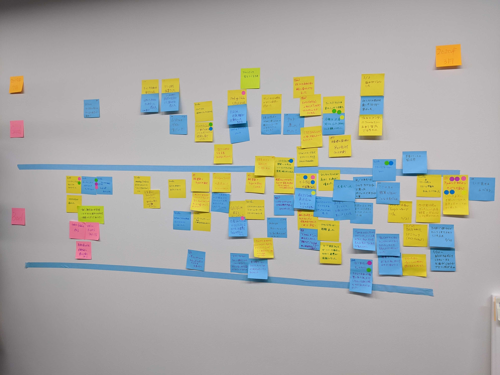
In the past 2 years, I've done several projects with the team and lead the product design of Kyash Wallet app.
Here are some other highlights of my work.
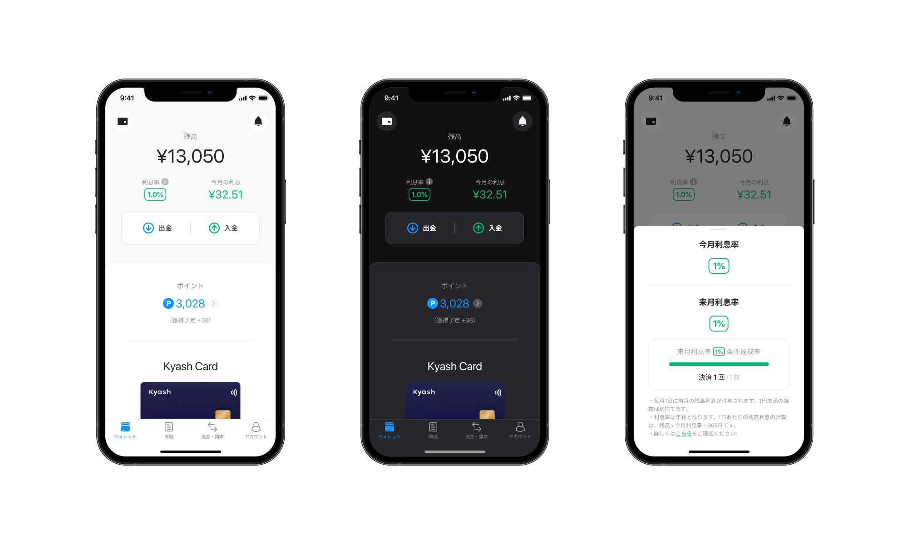
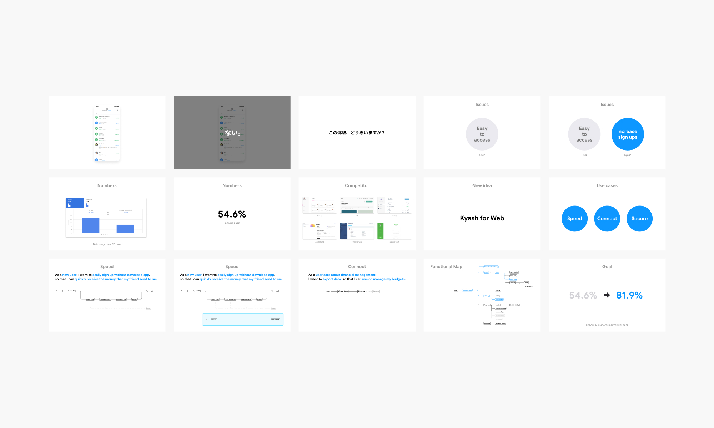
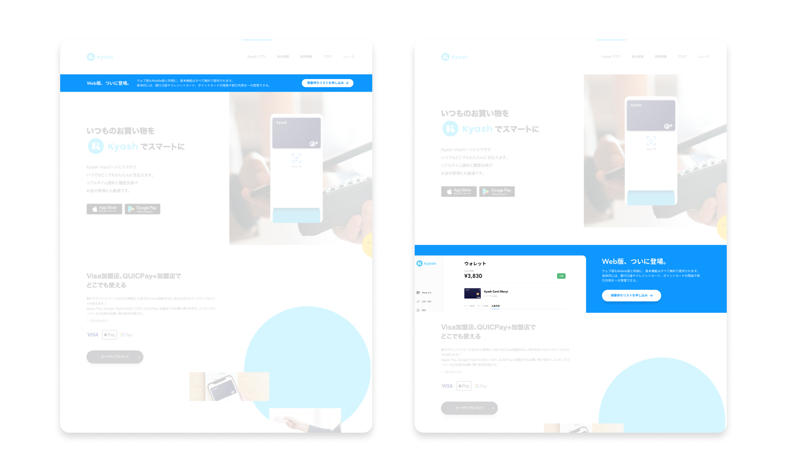
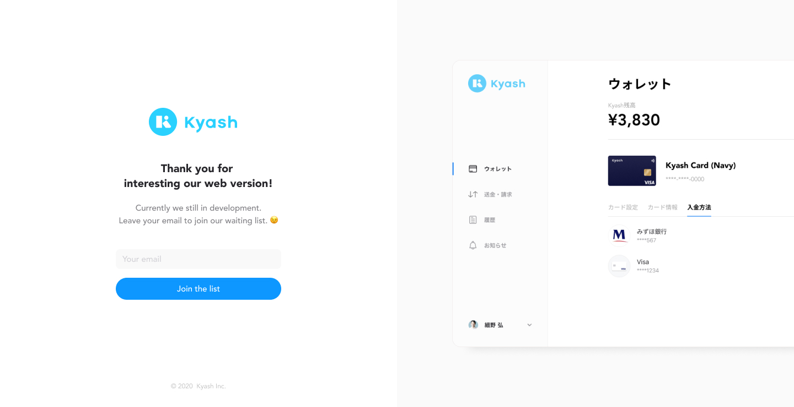
"プロダクトデザイナーとして、技術やツールの組織導入を率先して行ってくれ、それらを駆使した高いアウトプット力でブランドを創り上げてくれています。UIやインタラクションに対する考え方もロジカルで、周りの納得感を得つつ、設計・デザイン段階をリードしてくれています。
また、海外も含めた新しいデザインやサービスに関するキャッチアップを誰よりも早くプロジェクトやチームにも展開してくれるので、常に最新のトレンドを考慮したサービス設計が行えています。"
"He cares about design philosophy and principles and his UI work makes not only users but also developers feel excited. He really knows how to work with engineers."